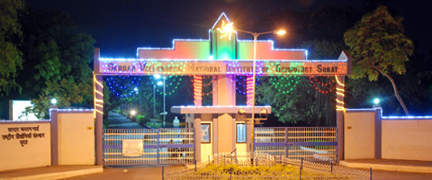

|About us|

History
Sardar Vallabhbhai National Institute Of Technology, Surat is one of the 17 Regional Engineering Colleges that were established as joint venture of the Government of India and the Government of Gujarat. It was established in June 1961 with facilities to run Bachelor's Degree Programmes in Civil, Electrical and Mechanical Engineering disciplines. It is now changed to National Institute of Technology along with other RECs. From the academic session 1978-79, the college switched over to the four year Degree programmes. In the year 1983-84, an under Graduate Course in Electronics Engineering had been introduced with an intake of 60 students. From the year 1988-89, two additional courses viz. Production Engineering and Computer Engineering were introduced with the approved intake of 30 students in each. From the year 1995-96 a degree course in Chemical Engineering had been introduced with an intake of 30 students which was later increased to 60 students from the year 1996-97. The total intake of students is, currently 426. Fifty per cent of the seats are filled up from the Gujarat State and the fifty percent of the seats are reserved for the students from other States with quota fixed for every State. In addition to intake of 426, twenty foreign students are also admitted under the scheme of Central Government.